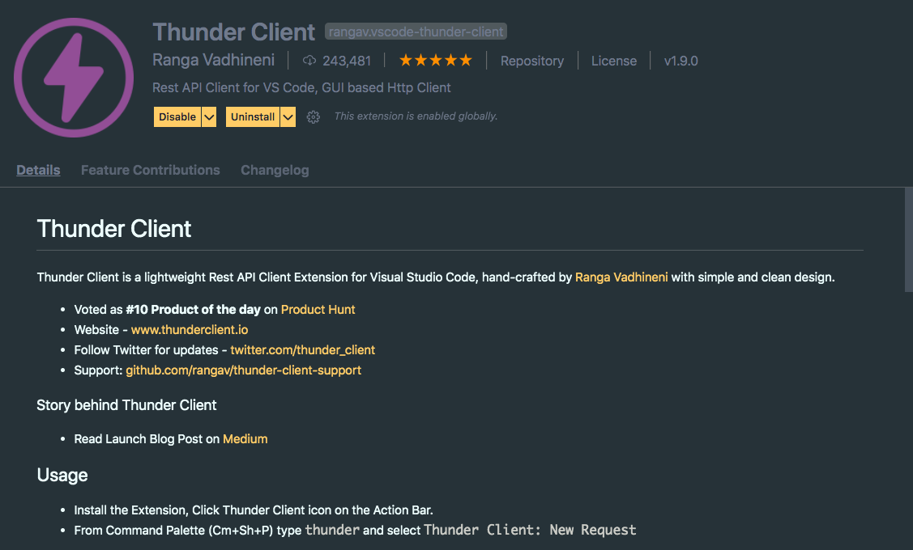

Hello Dev, today we'll look into the world of extensions.
As a developer, we all know that VS code is great, super cool IDE to write code. To make it super amazing and productivity friendly, we must install some extensions. And in this blog, I am going to help you in making your VS Code super cool.
I'm ready to share my list of extensions. So let's begin -
This is my VS Code theme - teacher theme dark created by Hitesh Choudhary.
Live Server helps in launching local development server with live reload for both static and dynamic web pages.
We import different files, modules using the import statement. But finding the path is a headache. Auto Import helps in the completion of the import statement automatically.
While working with loops and functions, finding pair curly braces is another headache. This time Bracket Pair Colorizer comes to the rescue by colorizing matching brackets.
Color Highlight highlights the colors written in hex value or RGB to give you an overview of the color.
Prettier formats the whole code with proper indentation and wrapping.
Sometimes we forget to review the TODOs we've added while coding before we publish the code to production. Now, we can highlight our TODOs using Todo Highlight.
Auto Rename Tag automatically rename paired HTML/XML tag. You just need to edit one tag and other will changed automatically. We just saved 2s of our time.
We are front-end developers. We need fake data to test our front-end skills. Our friend, vscode-faker provides us with fake data from different categories. Data is here, where are you?
"Hey, Today I write code for 5 hrs." How do I come to know about my coding hours? My ultimate time tracker, Code Time provides programming metrics. It also sends mail every week with all the data.
Thunder Client is a lightweight Rest API Client Extension that works like Postman where you test your server requests.
I hope above mentioned extensions help you with frontend programming and productivity. If you find this blog as helpful, don't forget to share it.
Thank you 🙂